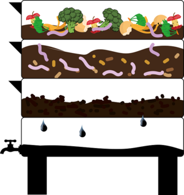

Lombricultura GDL
¡Bienvenido al fascinante
mundo de las lombrices!
En Lombricultura GDL estamos emocionados de compartir contigo la emoción que nos genera el lograr aprovechar tus residuos orgánicos y, con ayuda de la lombriz roja californiana, terminar con un abono natural de excelente calidad para tus plantas.

Construir una lombricompostera vertical es una excelente manera de aprovechar el espacio vertical y compostar tus residuos orgánicos de manera eficiente.
En Lombricultura GDL puedes encontrar todo lo que se te ocurra sobre las lombrices, estamos contentos de ayudarte.